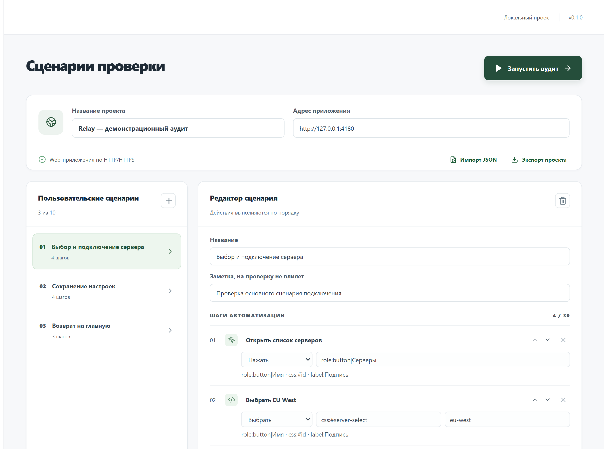
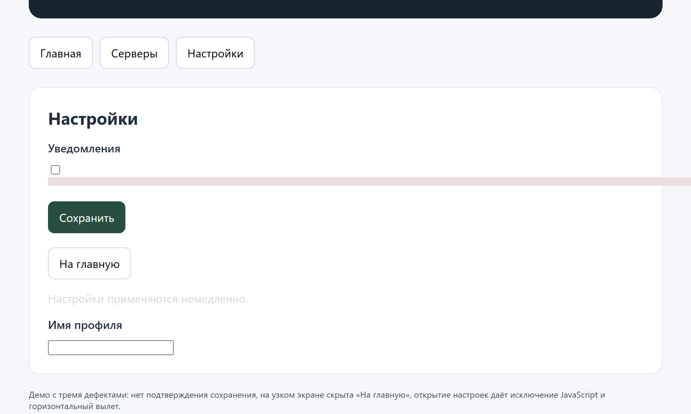
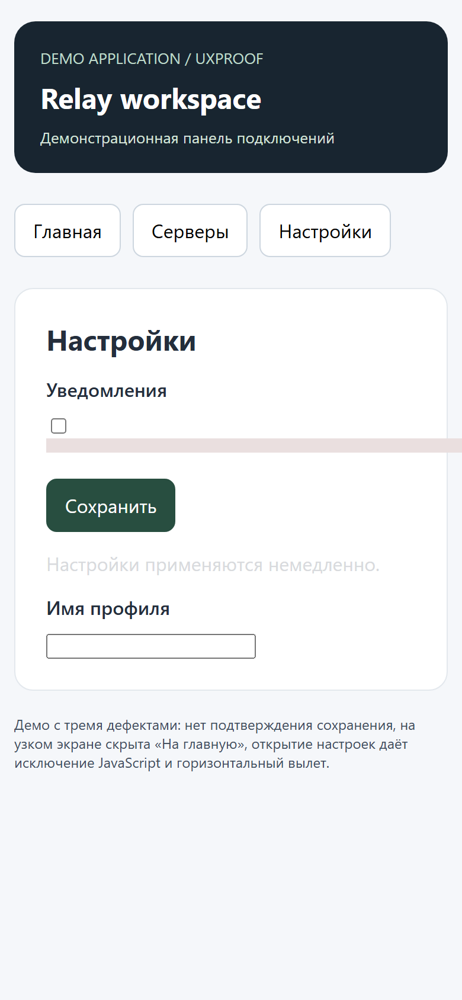
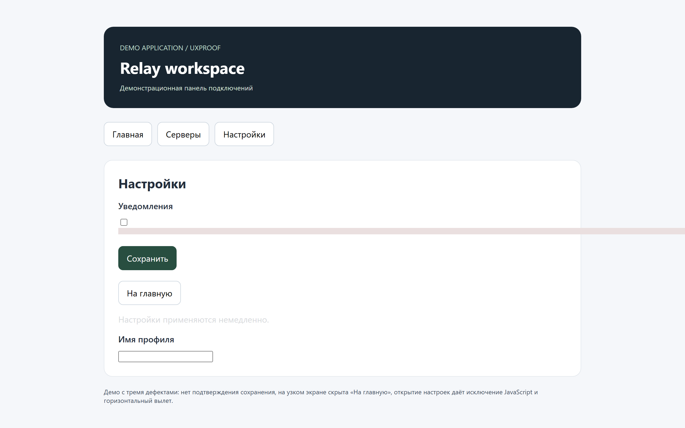
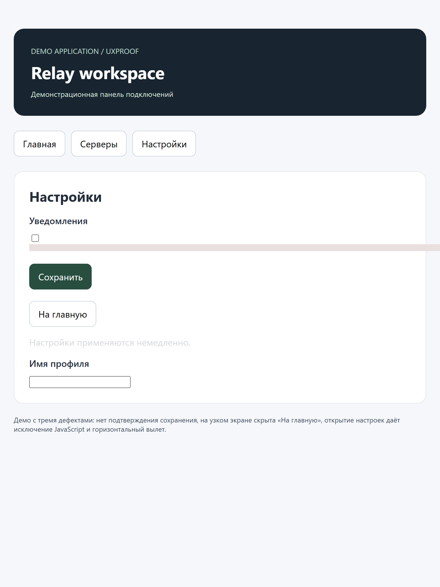
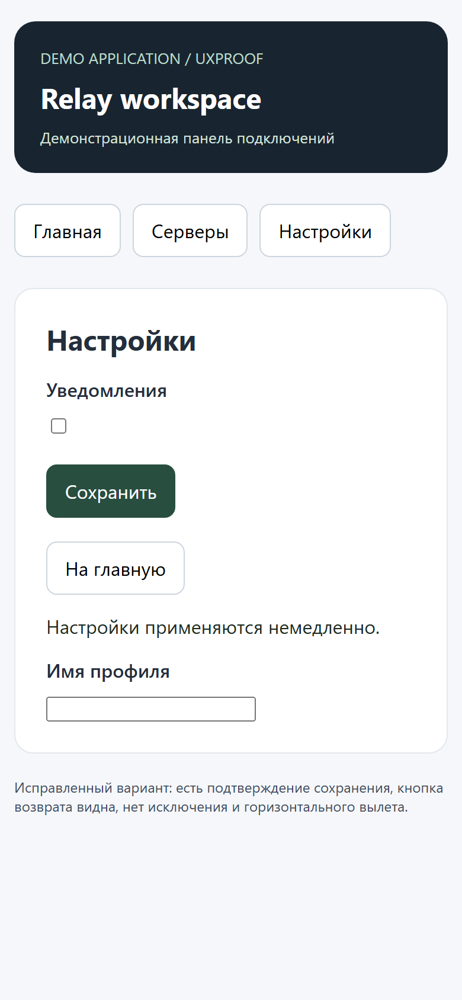
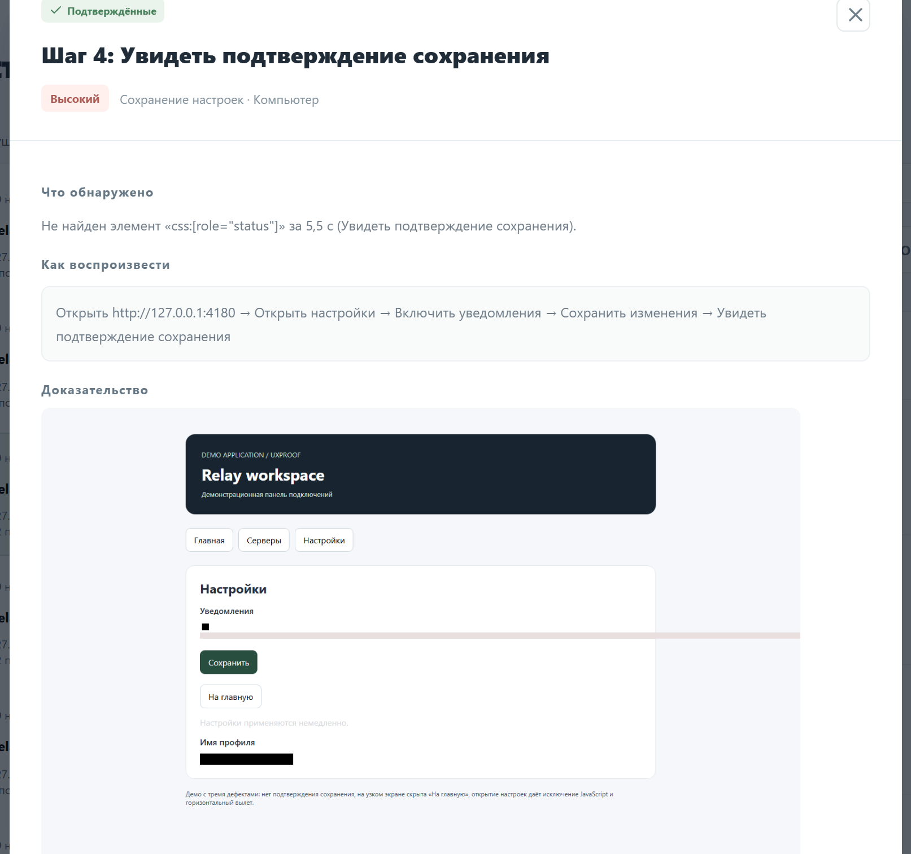
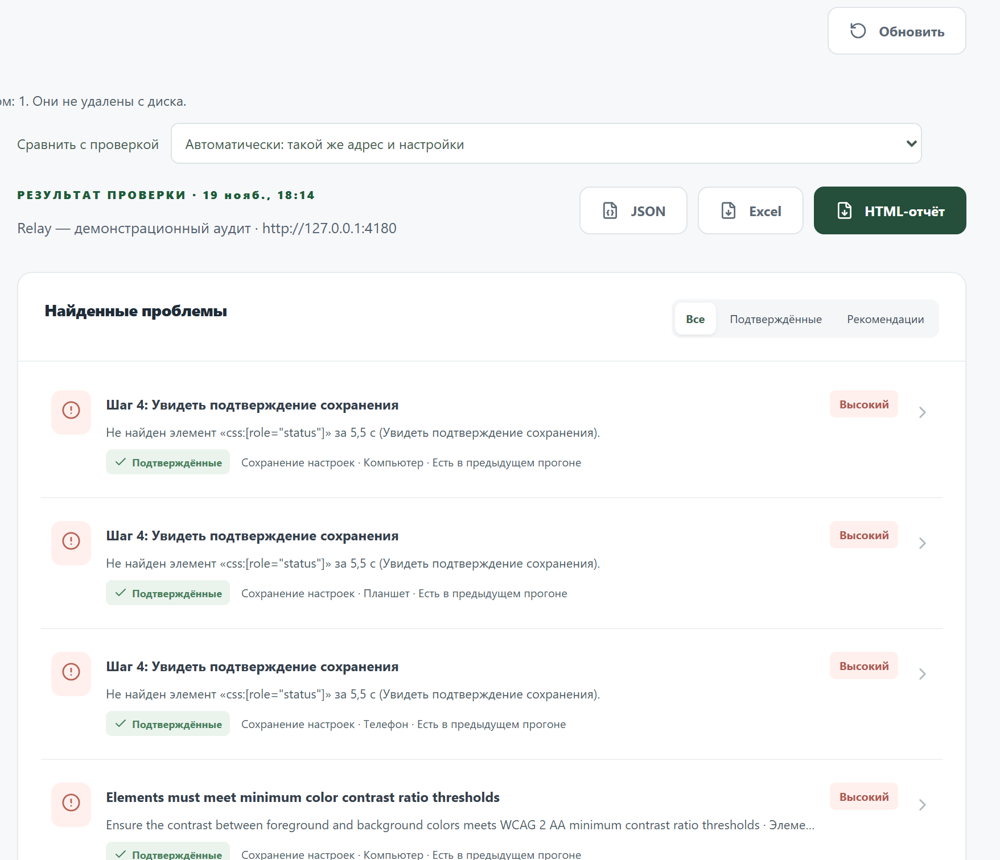
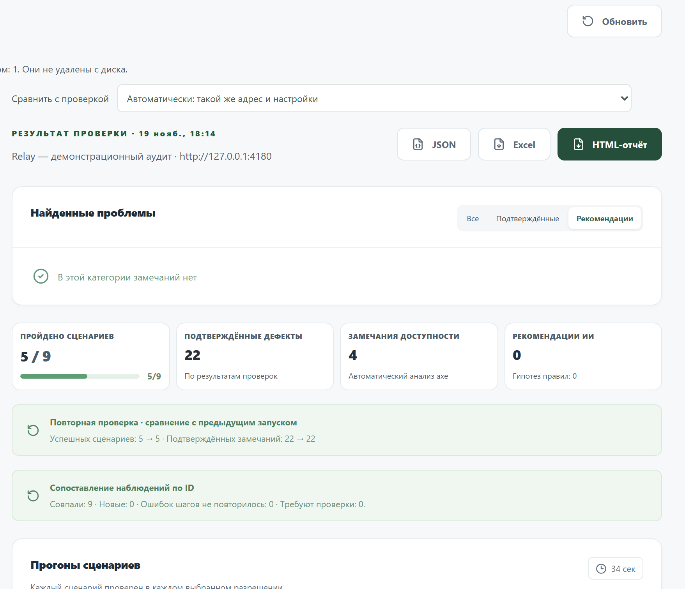

UXProof


Широкий экран: кнопка есть

390 px: кнопки нет, шаг падает за 5,5 с
1. Адрес
http://127.0.0.1:4180
2. Сценарии в редакторе
Выбор сервера, сохранение, возврат.
3. Результат в том же окне
Какой шаг сорвался, PNG доказательства.

Desktop 1440
Нет status после «Сохранить»

Tablet 768
Тот же шаг, тот же таймаут
Mobile 390
Плюс скрытая «На главную»


confirmed · Сохранение настроек · компьютер · 5,5 с без role=status

22 confirmed, 4 axe

Рекомендации ИИ: 0. Переключатель был выключен
Проверено 19 ноября 2026
Платный OpenAI не вызывали. Образ без WebView2 не ставили.
UXProof
Исходники: github.com/Narut0-1488/UXProof
Живое окно только на Windows, не веб-сервис.
Репозиторий, не онлайн-демо